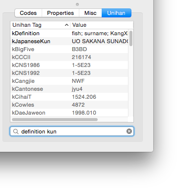

Unihan Data
The Unihan database contains additional information about CJK Unified Ideographs. UnicodeChecker allows you to see Unihan information for any codepoint. As the file size of the Unihan data is several megabytes it is not included but UnicodeChecker can download and install the file for you.
Once the Unihan data is installed, the “Unihan” tab will show a table with unihan tags and values for the currently selected codepoint. It includes a filter field for Unihan keys to highlight the tags you are interested in. You may enter multiple filter strings separated by spaces which results in an OR filtering so you can filter multiple keys at once.

Manually installing Unhian
When UnicodeChecker downloads the “Unihan.zip” file it will use the file from www.unicode.org/Public/ which matches the Unicode version shipped with UnicodeChecker. The file will be downloaded and unpacked in the current user’s ~/Library/Application Support/UnicodeChecker/Unicode Data/. UnicodeChecker will also verify the downloaded Unihan data for corruption.
If you need a different version of the Unihan database you need to manually download it from www.unicode.org/Public/. You can also make the Unihan data available to all UnicodeChecker users on your Mac by moving the file to the Library folder located at the root level of your hard disk: /Library/Application Support/UnicodeChecker/Unicode Data/ (see also Unicode Data Files).